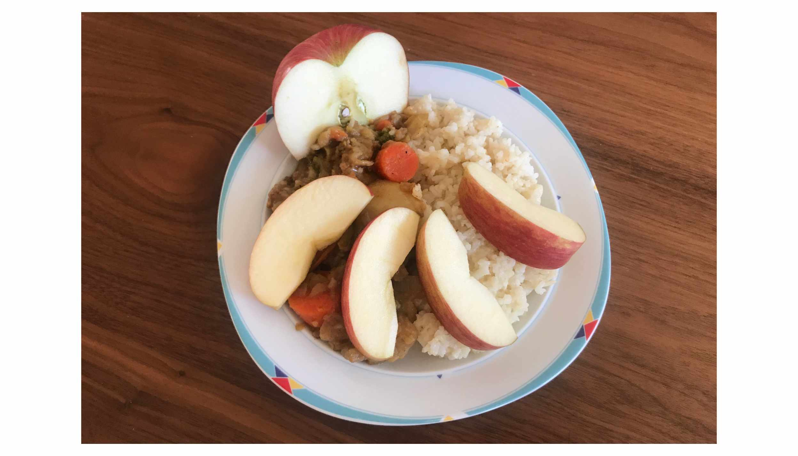
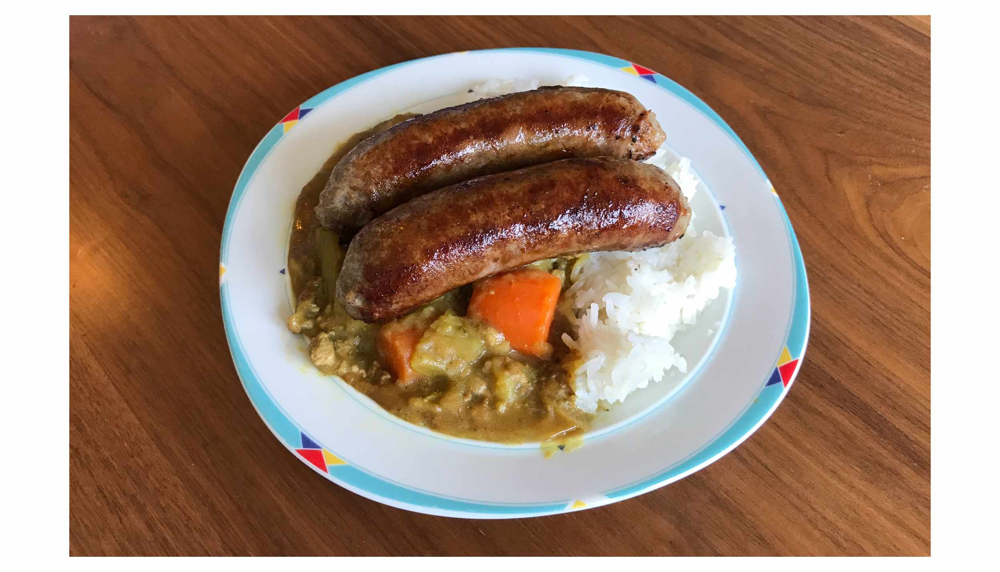
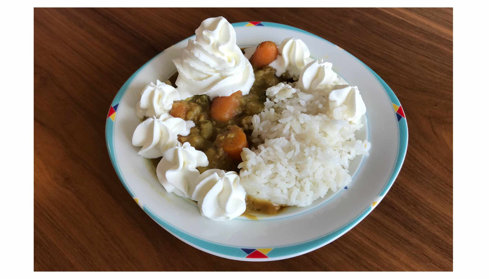
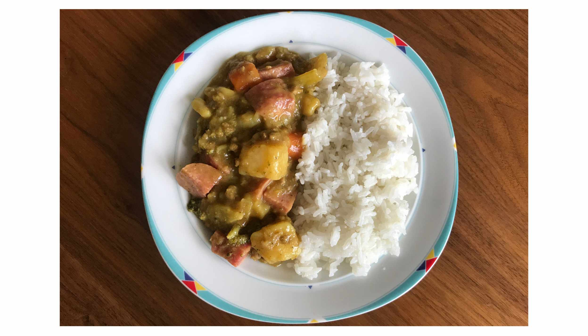
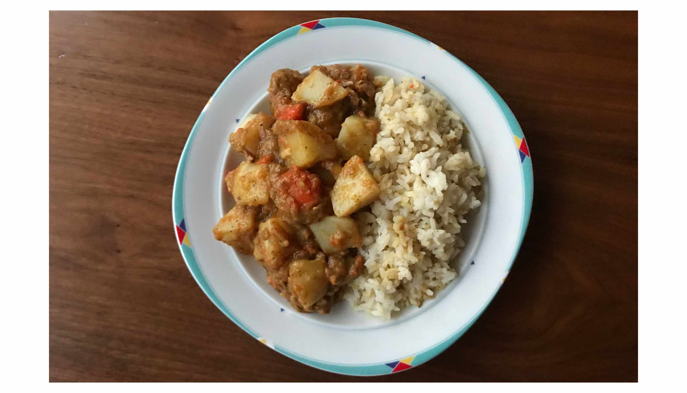
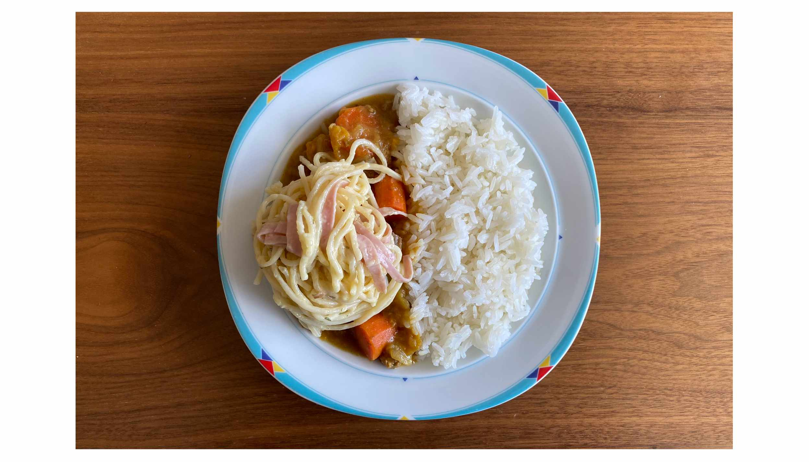
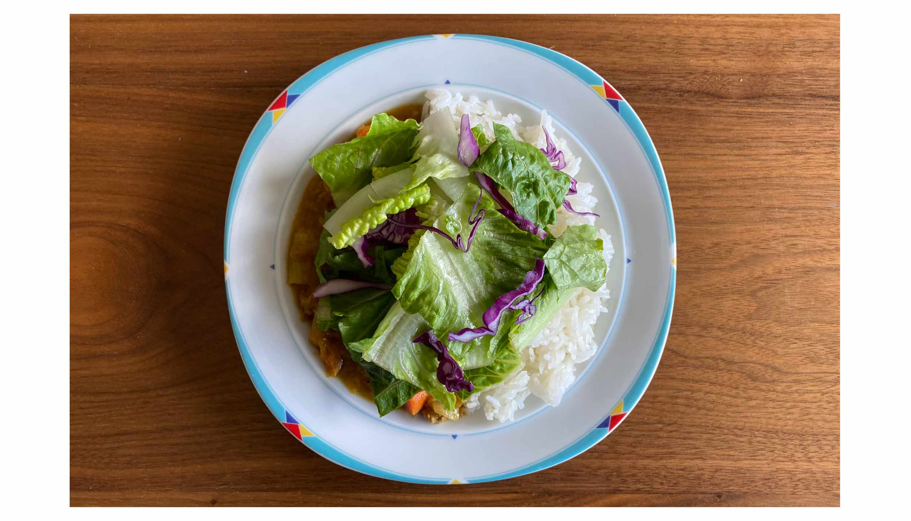
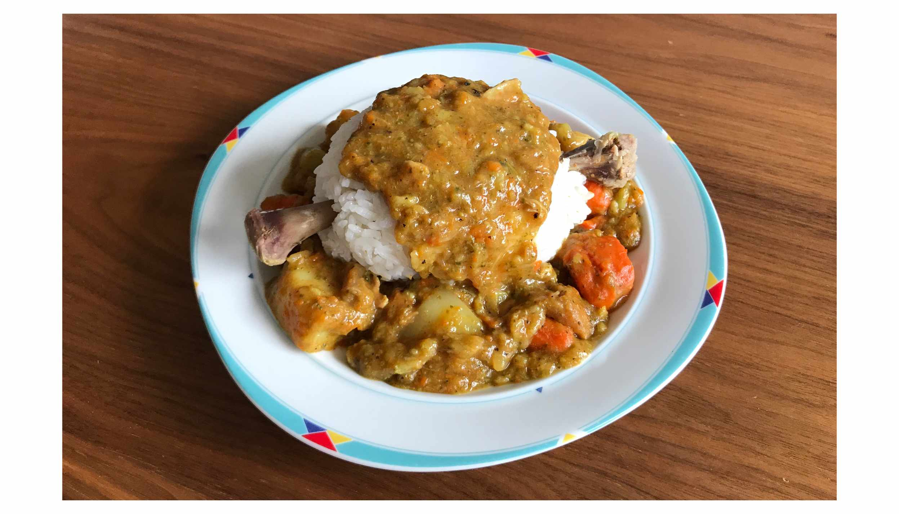
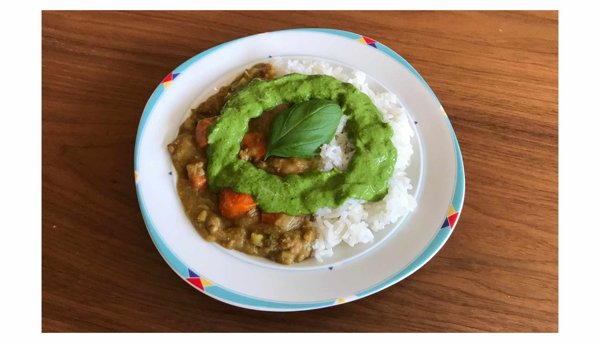

Pokémon Sword and Shield Curry
From May 2020 to May 2021, I recreated and ranked all 26 varieties of curry from Pokémon Sword and Shield so that you don't have to.
If you want to try any of these for yourself, this recipe is similar to how I make Japanese curry. I use S&B Golden Curry roux cubes.
S tier
This curry changed my life. I've already made it again, possibly multiple times.
Boiled-Egg Curry
Coconut Curry

Apple Curry
- Add sliced apple while caramelizing the onions
- Sounds weird, right? Just trust me
A tier
A significant improvement from regular curry.

Sausage Curry

Whipped-Cream Curry
- Add homemade whipped cream (no sugar)
Bean Medley Curry

Juicy Curry
Cheese-Covered Curry
Burger-Steak Curry
- Add grilled hamburger patties
Mushroom Medley Curry
- Add rehydrated Chinese mushrooms
B tier
About as good as regular curry.
Tropical Curry
- Use this recipe (the only one I could find that has bananas in the curry mix)
- Steal flowers for garnish

Plenty-of-Potato Curry
- Add plenty of potatoes
- Everyone loves potatoes
Fried-Food Curry
- Add fries and fried chicken
Smoked-Tail Curry

Pasta Curry
Toast Curry
Decorative Curry
- Carrots for the shapes, bell pepper for the cheeks, seaweed for the eyes/ears

Salad Curry
Leek Curry
Regular Curry
Gigantamax Curry
- Place under a plant grow light for ominous red glow
C tier
Kind of weird, wouldn't do it again.
Instant-Noodle Curry
- Make a cup of Shin Ramyun, put curry on top
Rich Curry
- I added sardines, but I should have used Korean fish cakes

Bone Curry
- Use bone broth instead of water to make curry
- This curry was way too savory
Seasoned Curry
- Add chili oil
- You should use a better brand than I did. I recommend S&B Cruncy Garlic

Herb Medley Curry
- Make a sauce from parsley, wasabi, and basil
- Too much wasabi
D tier
Nothing in this tier. It's hard to make a bad curry.
{kind=link}